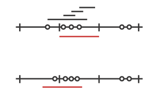

Throttling Actor Messages
Introduction
Suppose you are writing an application that makes HTTP requests to an external web service and that this web service has a restriction in place: you may not make more than 10 requests in 1 minute. You will get blocked or need to pay if you don’t stay under this limit. In such a scenario you will want to employ a message throttler.
This extension module provides a simple implementation of a throttling actor, the TimerBasedThrottler.
How to use it
You can use a TimerBasedThrottler as follows. From Java it looks like this:
// A simple actor that prints whatever it receives
ActorRef printer = system.actorOf(Props.create(Printer.class));
// The throttler for this example, setting the rate
ActorRef throttler = system.actorOf(Props.create(TimerBasedThrottler.class,
new Throttler.Rate(3, Duration.create(1, TimeUnit.SECONDS))));
// Set the target
throttler.tell(new Throttler.SetTarget(printer), null);
// These three messages will be sent to the target immediately
throttler.tell("1", null);
throttler.tell("2", null);
throttler.tell("3", null);
// These two will wait until a second has passed
throttler.tell("4", null);
throttler.tell("5", null);
//A simple actor that prints whatever it receives
public class Printer extends UntypedActor {
@Override
public void onReceive(Object msg) {
System.out.println(msg);
}
}
And from Scala like this:
// A simple actor that prints whatever it receives
class PrintActor extends Actor {
def receive = {
case x ⇒ println(x)
}
}
val printer = system.actorOf(Props[PrintActor])
// The throttler for this example, setting the rate
val throttler = system.actorOf(Props(
classOf[TimerBasedThrottler],
3 msgsPer 1.second))
// Set the target
throttler ! SetTarget(Some(printer))
// These three messages will be sent to the target immediately
throttler ! "1"
throttler ! "2"
throttler ! "3"
// These two will wait until a second has passed
throttler ! "4"
throttler ! "5"
Please refer to the JavaDoc/ScalaDoc documentation for the details.
The guarantees
TimerBasedThrottler uses a timer internally. When the throttler’s rate is 3 msg/s, for example, the throttler will start a timer that triggers every second and each time will give the throttler exactly three "vouchers"; each voucher gives the throttler a right to deliver a message. In this way, at most 3 messages will be sent out by the throttler in each interval.
It should be noted that such timer-based throttlers provide relatively weak guarantees:
- Only start times are taken into account. This may be a problem if, for example, the throttler is used to throttle requests to an external web service. If a web request takes very long on the server then the rate observed on the server may be higher.
- A timer-based throttler only makes guarantees for the intervals of its own timer. In our example, no more than 3 messages are delivered within such intervals. Other intervals on the timeline, however, may contain more calls.
The two cases are illustrated in the two figures below, each showing a timeline and three intervals of the timer. The message delivery times chosen by the throttler are indicated by dots, and as you can see, each interval contains at most 3 point, so the throttler works correctly. Still, there is in each example an interval (the red one) that is problematic. In the first scenario, this is because the delivery times are merely the start times of longer requests (indicated by the four bars above the timeline that start at the dots), so that the server observes four requests during the red interval. In the second scenario, the messages are centered around one of the points in time where the timer triggers, causing the red interval to contain too many messages.
For some application scenarios, the guarantees provided by a timer-based throttler might be too weak. Charles Cordingley’s blog post discusses a throttler with stronger guarantees (it solves problem 2 from above). Future versions of this module may feature throttlers with better guarantees.
Contents